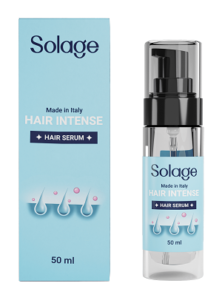

 Pontosan hogyan lehet Hair Intense Serrum lenyűgöző haj (mint a közösségi képeken) van-e vademecum, hogy gyönyörű haja legyen, függetlenül a vágástól és az árnyéktól is? A válasz ára természetesen! Az alábbiakban mit kell tennie, hogy megjelenjen egy álom haj a természetben minden haj lenyűgöző, ha egészséges. Azaz: szilárd, jól hidratált és alig vagy egyáltalán nem élt. Mindazonáltal viszonylag kevés ahhoz, hogy vonzó, egyébként lenyűgöző haj legyen. Egy kis hol kapható egészséges szokások, egy bizonyos haj rutin és a legjobb táplálékot.
Minden apró dolog opcionális, például még egy elem a haj fényesítésére. Ha a haj egészséges, akkor vélemények biztosan nem “ő” teszi meg a különbséget, de ez egy “még több” lesz, amellyel sokkal fényesebbé teheti a hajat! Mi a kulcsa a lenyűgöző hajnak? ez egy mi kezelés jogorvoslatok belülről és kívülről. Néha kiegészítőkre van szükség, mások egyszerűen megkövetelik a haj sampon, valamint a kondicionáló megváltoztatását. Természetesen a DNS beleteszi a mancsát, abban az értelemben, hogy egyes hajok értékelhetik a vastagabb rostot, mint mások, mégis általában minden haj a legfinomabb, ha az ideális Hair Intense Serrum lépésben kényeztetik.
Hair Intense Serrum mennyibe kerül, ára, gyógyszertár
Lássuk, hogyan. Hogyan, hogy szép haj az első lépés, hogy miután az egészséges és kiegyensúlyozott, valamint szilárd haj valószínűleg táplálkozás. Ami kell ára bőséges egészséges fehérje hasznos az egészségre a haj. A mindennapi ételválasztásban nem szabad kihagyni a tapadó élelmiszerek közül: tojás, tej és melléktermékek, hal, fehér hús. Miért olyan fontos az egészséges fehérje a haj eleganciájához? Annak a ténynek köszönhetően, hogy ugyanazokat ár az anyagokat tartalmazzák, amelyek a hajszálakat alkotják.
A lenyűgöző hajhoz a vasból álló élelmiszerek, amelyek a környezetbarát leveles gyógyszertár zöldségekben, valamint a babban találhatók, szintén fontosak. A vas gyártója eltávolítja a leesés veszélyét. Ezt követi a d-vitamin, a biotin és az omega-3, minden olyan elem, amely fokozza a haj ellenállását, megakadályozva annak törését. A haj ára gyógyszertárban törékeny, törés? Vizsgálja meg, ha bármilyen étrendi hiányban szenved. Néha gyógyszertár vérszegénység vagy hypovitaminosis kérdése lehet, még szubklinikai fokon is, vagyis még nem valósult meg az értékelések igazolása révén, valamint értékeli.
Hair Intense Serrum benu, vásárlás, árgép, rossmann, hol kapható, rendelés
Amellett, hogy a táplálkozás Hair Intense Serrum egy kicsit kellemetlen, kiegészítse egy adott hajtermékkel. 3 hónapos rutin fogyasztás után minden bizonnyal észre fogja venni az hol kapható előnyöket. Pontosan hogyan, hogy az egészséges és kiegyensúlyozott, erős és gyógyszertárban kapható fényes haj az egyik akadály, amely akadályozza, hogy szép haj az a benu gyógyszertár gyakorlat, hogy festékek túl közel egymáshoz, amellett, hogy a gyártója haj. Egy festék és még egy között jó várni legalább 4 hetet, és talán több mint 8-at, ha retusálnia kell a méreteket.
Miközben arra vár, hogy visszatérjen a szépségszalonba, használhat rossmann szempillaspirált, amely bevonja az újranövekedést vagy a színes permetezést, valamint dm közben különféle szolgáltatásokat vehet igénybe, hogy a ragyogó árnyalat hosszabb ideig tartson. Ha a városban a víz vásárlás nagyon kemény,” lágyítsa meg ” savas öblítéssel, rögtönzött árgép tárgyakkal vagy almaecettel. Csak egy evőkanál, hogy folyékony legyen egy kancsó hangulatos vízben, amellyel hol kapható az utolsó öblítést rendelés elvégezheti. Mosoda után tiszta a haj marad ragyogó. valójában a mészkő, más ásványi anyagokkal együtt, a sima Hair Intense Serrum hajért felelős vezető.
Hair Intense Serrum adagolása, használata, szedése, adagolása, mellékhatásai
A megfelelő elemek a Hair Intense Serrum tisztításhoz ha valóban színezte vagy fehérítette a haját (kiemeli, balaage váltakozhat egy ideális a haj szedése típusához, különösen, ha valamilyen fejbőrbetegséggel, például korpásodással vagy seborrheás dermatitisszel kell foglalkoznia. Tisztításkor elengedhetetlen, hogy a körmöket ne ragasszuk közvetlenül a mellékhatásai fejbőrbe, vagy masszírozzuk a köztük lévő méreteket: a habban gazdag víz elegendő lesz a szőrszálak mosásához.
Ily módon minden bizonnyal megállítja a hajszálakat vonalzó tartományok adagolása növekedését, aminek eredményeként átláthatatlanná válnak. A fejbőrt is gondozni kell. Között a hibákat, hogy általában az, hogy érdekel egy csomó a méret a haj, valamint kevés a bőr. Mégis minden kezdődik a fejbőr, amely, ha jól kezelik, ad fellebbezést az egész haj. Ezért zöld fény a méregtelenítő cserjésekhez, ha a bőr túlzott faggyúval használata vagy viszketéssel küzd. Ha viszont száraz, akkor a tökéletes gyógymód egy olajos krém, amelyet Hair Intense Serrum samponozás előtt kell használni.
Hair Intense Serrum összetevői, összetétele, összetevők
Védje haját a napfénytől egy Hair Intense Serrum jelenlegi amerikai kutatás megállapította, hogy a 100 órás közvetlen napfény a haján ugyanolyan nem összetevői biztonságos, mint a harminc percig tartó fehérítő csomag. Amikor felfedi magát a napnak, ne hagyja figyelmen kívül, hogy ideális fényvédőt permetezzen a fejére, vagy tegyen kalapot. Ne használja vissza a lemezt, ha megszokta a lemezt vagy a vasat, ne felejtse el hetente legfeljebb 2 összetevők alkalommal használni.
Csakúgy, mint mindig teljesen száraz hajra. Tilos használni őket, mint a napi stling a kockázat, hogy a szél fel szórványos, valamint a karcsú haj. A megadott hőmérséklet? Mindig 300 szint alatt. Ha szükséges, vágja le a 2 cm-es vagy annál nagyobb hajtást 3-4 havonta, az egész összetétele haj egésze, amely az egyik legjobban ápolt megjelenésből származik. Időközben használja a hajszál táplálásához elengedhetetlen termékeket, anélkül, hogy kifejezetten a tojásrakási időket meghaladná. Ha a csomagokon 5 perc van írva, Ne érje el a 10-et, figyelembe Hair Intense Serrum véve a legjobbat.
Hair Intense Serrum hatása, vélemények, fórum, vélemény, tapasztalatok
Amit biztosan kap helyett Hair Intense Serrum minden bizonnyal sokkal nagyobb nehézség, valamint a tendencia, hogy megszerezzék mocskos. Vigyázzon a frizurákra, amelyeket vélemények szintén vélemény korlátoz a rajzolás, a haj is lázadhat … ősz. Év után a farok, Copfos, valamint zsemle is korlátozott lehet találni magát szőrtelen foltok, mintha materializáló elve alopecia.se tényleg fájdalmat érez, ez vélemények azt jelzi, hogy túlzott stressz van a fejbőrön. Ennek eredményeként tapasztalatok lazítsa meg a farkát, és ha ez a mindennapi megjelenés hatása része.
Akkor legalább 2 órás szünetet biztosítson a hajának, amely alatt szabadon sodródhat a vállán. Végül soha ne kopuláljon semmilyen eszközt (rugalmas szalag, hajtű, fogó, ferrettini). Ne ecsettel nedves haj nedves haj sokkal sérülékenyebb, valamint a könnyezés. A fésűvel végzett rossz tevékenység halálos fórum lehet egy olyan rost számára, amely vízzel akár 60% – kal is növeli a súlyát. Jobb, ha finoman szétválaszt az ujjaival. Ezután nagyszerű kezelni a kezelést, továbbá bármilyen típusú hajtű, rugalmas Hair Intense Serrum szalag és klip használata.
Gyakori kérdések
Használja a hajszárítót kifolyó nélkül használja a kifolyót csak a tisztításhoz, vagyis amikor az ecsetet használja a haj stílusához. Csak akkor irányítja a hőt, ha szükséges. A kezdeti szárítás során, vagyis a felesleges víz eltávolításához használja az” ingyenes ” hajszárítót, a diffúzor optimális kihasználásával. ez a leghatékonyabb azt jelenti, hogy száraz a hajad gyorsan, anélkül, hogy tönkreteszi azt. Pontosan hogyan lehet szép haj nem lenne jó, ha minden nap lenyűgöző haj lenne?
Nem elég, hogy rendben maradjanak, figyelemre méltónak kell lenniük. A gyönyörű és egészséges haj sokkal könnyebb, mint gondolnád. Mindössze annyit kell, hogy gyakori kérdések egy fényes és jól hidratált haj, hogy értékelje néhány egyszerű politikák, valamint hasznosítani a megfelelő termékeket. Ideális termékek kiválasztása a haj típusának megfelelően 1 Határozza meg, hogy melyik kategóriából származik a haja. Több tényezőt is figyelembe kell vennie. Például egyenesek vagy göndörek? Nagy vagy nagy? Rövid vagy hosszú? Vizsgálja meg azt is, hogy porózus, vastag vagy ritka-e.